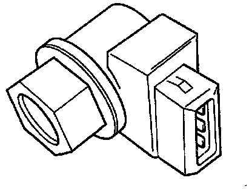
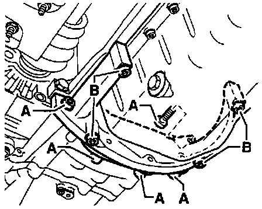

Installation
Transmission:

1. Before installing the transmission, press the clutch release lever toward the transmission case and secure it with M8 x 35 bolt.
2. Remove the bolt once the transmission is installed. The hole is then occupied by the 3rd mounting bolt for operating cables bracket.
Securing Transmssion With Bolt:

Vehicle Speed Sensor:

3. If the transmission is being replaced, transfer the Speedometer Vehicle Speed Sensor (VSS), Back-Up Light Switch and relay lever from the old transmission to the new one.
4. Check to make sure that the engine/transmission alignment dowel sleeves are in place in the cylinder block. Replace if necessary.
5. Clean the splines of the main shaft and lubricate lightly with lithium grease or equivalent.
6. When replacing the transmission, check for correct positioning of the intermediate plate.
7. Install engine/transmission mounts so that they are free of tension.
8. Install the transmission in the reverse order of removal.
Support Plate For Transmission:

9. Tightening sequence for support between engine and transmission (if applicable ):
a. Install all bolts and tighten by hand
b. Tighten bolts "A" to: 45 Nm (33 ft lbs).
c. Tighten bolts "B" to: 45 Nm (33 ft lbs).
10. Check transmission oil level.
11. Torque all nuts and bolts to specifications.
12. Adjust gear selector mechanism.